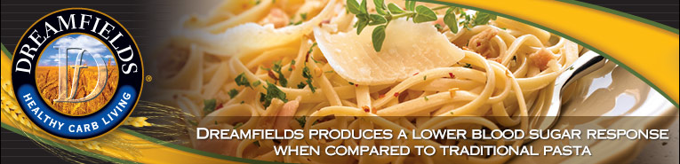

<div id="socialBarBox">
        <ul id="socialBarBtn">
          <li class="left"><a href="http://www.facebook.com/dreamfields" title="Like us if you Love Dreamfields" target="_blank"><span>Like us if you Love Dreamfields</span></a></li>
          <li class="middle"><a href="http://twitter.com/#!/HealthyPasta" title="Follow us on Twitter" target="_blank"><span>Follow us on Twitter</span></a></li>
          <li class="right"><a href="http://pinterest.com/dreamfields/" title="Check out Dreamfields on Pinterest" target="_blank"><span>Check out Dreamfields on Pinterest</span></a></li>
        </ul>
      </div>
<a href="index.html"></a>